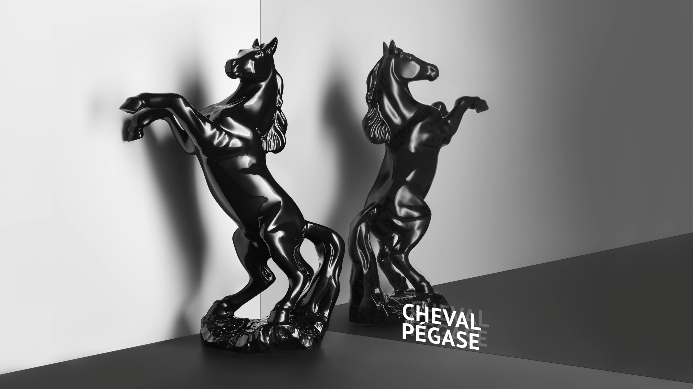
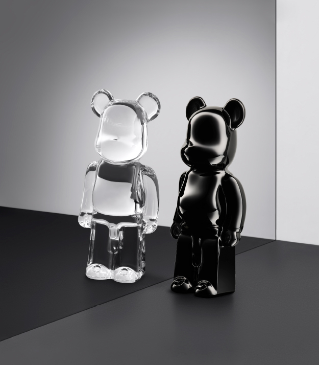
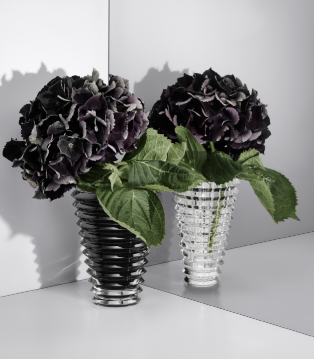
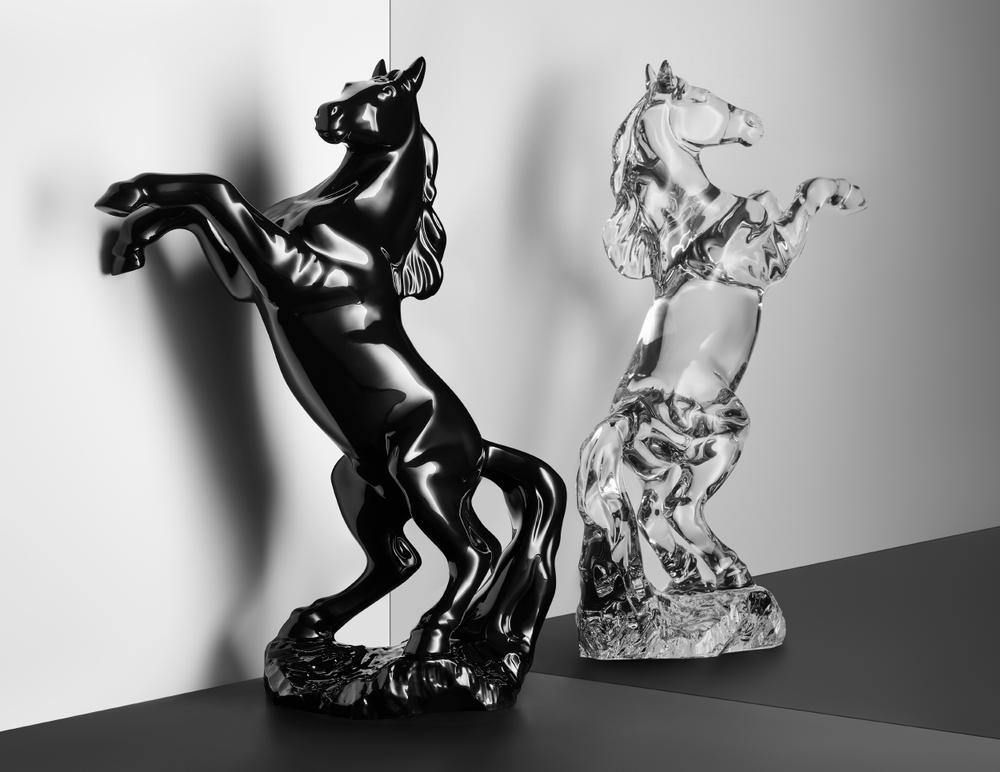
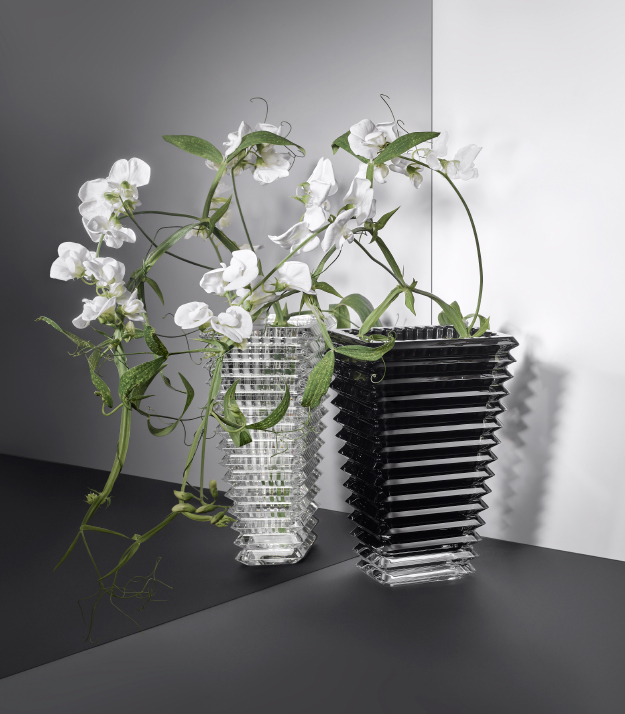
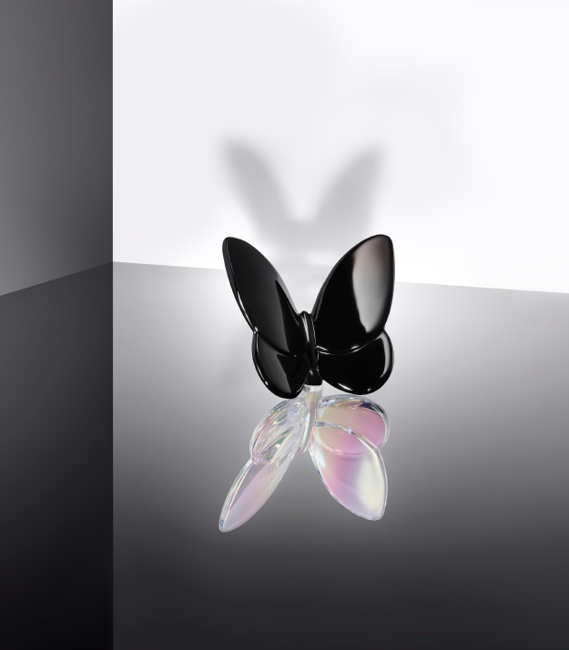
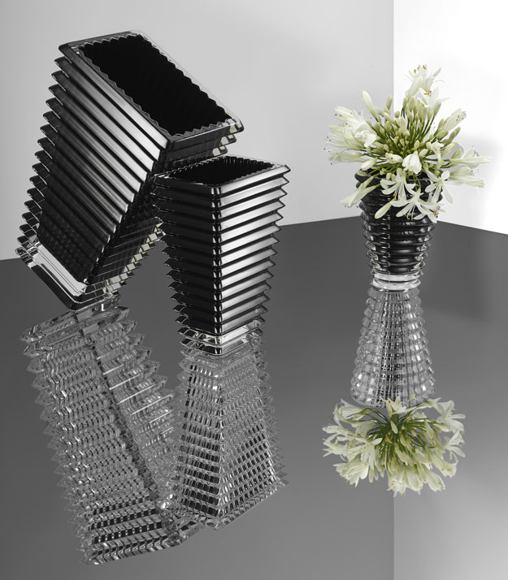

REFLECTIONS
REFLECTIONS
СВЕТЛЫЙ С ЧЕРНЫМ.
СИМВОЛ АБСОЛЮТНОЙ ЭЛЕГАНТНОСТИ В МОДЕ,
ДИЗАЙНЕ И ИСКУССТВЕ, ЧЕРНЫЙ ЦВЕТ ВЫЗЫВАЕТ РОСКОШЬ,
ТАЙНУ И СИЛУ.
ЧЕРНЫЙ - ИЕДАЛЬНЫЙ ПАРТНЕР
ДЛЯ ПРОЗРАЧНОГО ХРУСТАЛЯ, ОБЪЕДИНЕННЫЕ ВМЕСТЕ,
ОНИ ВОВЛЕКАЮТ СВЕТ И ТЬМУ
В ТОНКУЮ ИГРУ КОНТРАСТОВ
И ТЕНЕЙ.
СОБЛАЗНИТЕЛЬНЫЕ И СМЕЛЫЕ,
«ОТРАЖЕНИЯ» ОТ BACCARAT ПРИВНЕСУТ ИДЕАЛЬНЫЙ
И ДЕРЗКИЙ АКЦЕНТ В ЛЮБОЙ ИНТЕРЬЕР.






REFLRECTIONS
REFLRECTIONS